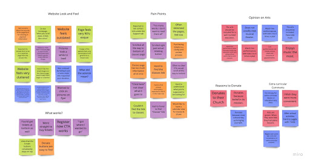
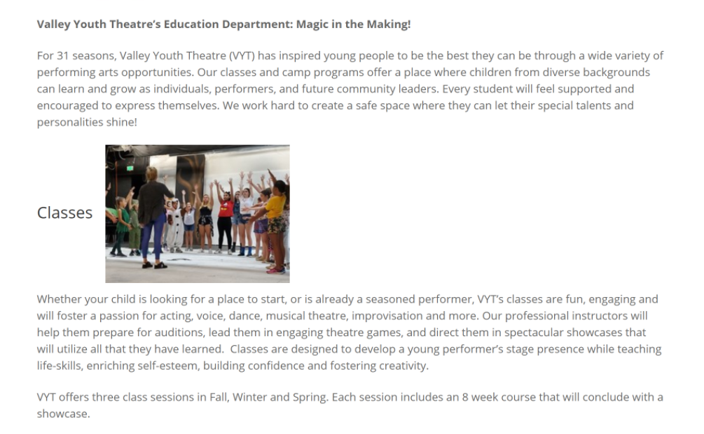
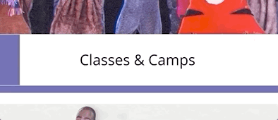
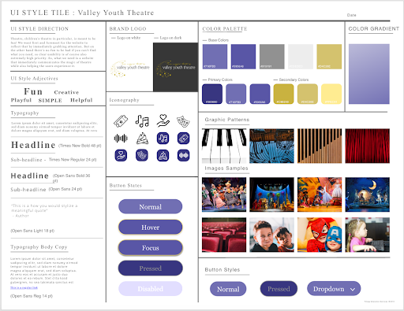

ERIC
SMITH
PORTFOLIO
Valley Youth Theatre
Nonprofit Website Redesign
- Timeline: Three weeks
- Team: Eric Smith, Danny Acosta, Stephen Rosema
- Tools: Miro, Adobe XD
Overview:
In this prototype, I worked with a team to update the website design of a local theatre. We found room for improvement in terms of usability and visual appeal and did our work based on that. We worked closely with a key figure at the theatre to guide our work and learn about which features of their website to focus on.
UX Process:
During user testing of the existing site, we encountered some troubling usability issues, chief among them a functionally invisible button that leads to class registration. Since the global pandemic had left online classes as the theatre’s primary income, this was a huge deal.
UI Design:
I created this hover interaction animation for the three main buttons as a subtle bit of motion to catch the eye without being too distracting. This design paradigm of purposeful visual flair was employed from top to bottom throughout the process. We wanted to keep the theatre’s brand, from its colorful palette to its tasteful typography, completely intact even as we repurposed them according to modern best practices.
Conclusion:
Working with the client opened my eyes to how usability concerns can have profound consequences on a business. Prioritizing those concerns was a great way to organize our workflow, and gave us a true sense of the impact this work can make.